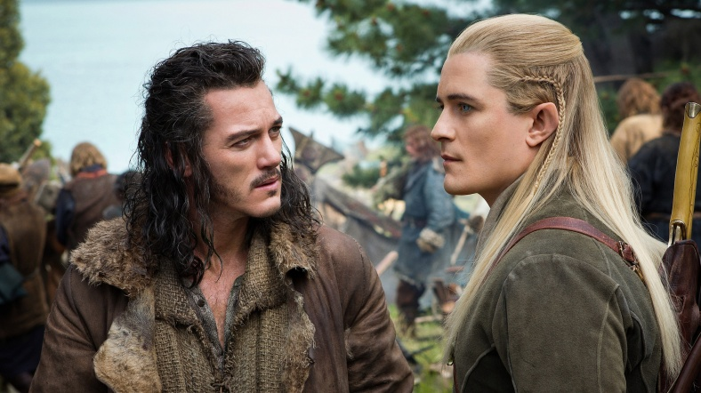
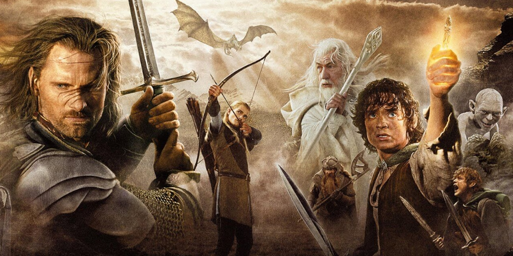
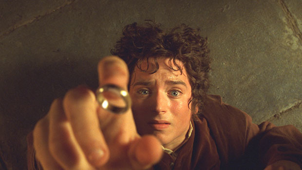
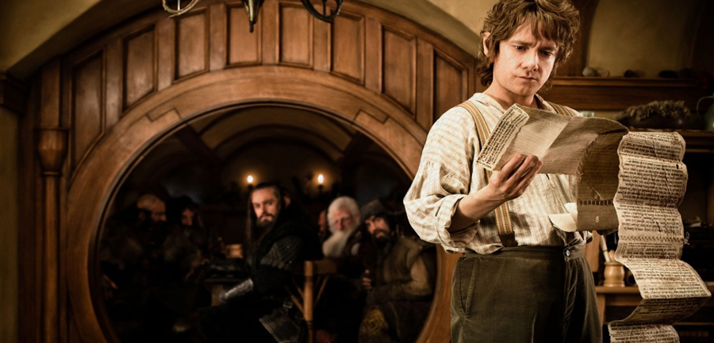
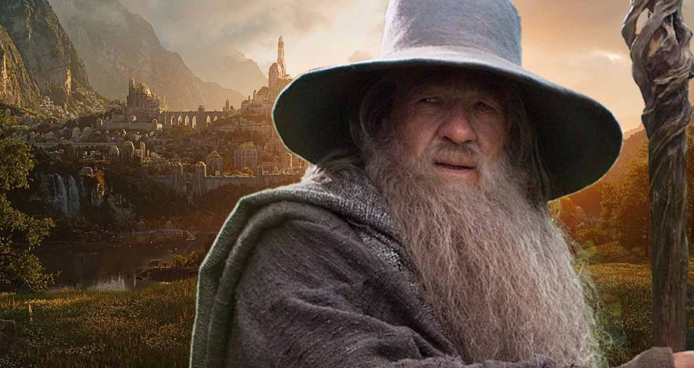
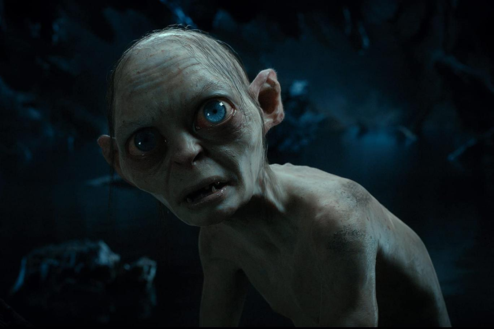
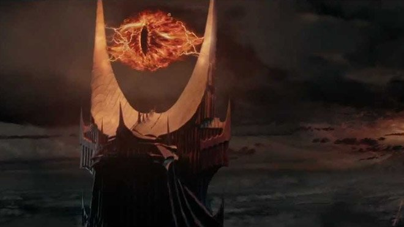

Yüzüklerin Efendisi, İngiliz filolojist ve Oxford Üniversitesi profesörü J. R. R. Tolkien'in yazdığı epik fantezi türündeki romandır. Hikâye, Tolkien'in çocuklar için yazdığı 1937 tarihli Hobbit'in devamı olarak başlamıştı ancak sonunda ondan çok daha büyük bir eser haline geldi. Çoğu II. Dünya Savaşı'nda olmak üzere 1937 ve 1949 yılları arasında aşamalar halinde yazıldı. 150 milyonun üstündeki satış sayısıyla tüm zamanların en çok satan ikinci romanıdır. Romanın ismi bütün Orta Dünya'yı fethedip hakimiyetine almakta kullandığı diğer Güç yüzükleri'ne hükmeden Tek Yüzük'ü ilk çağlarda yaratan, hikâyenin kötü karakterlerinden biri olan Lord Sauron'u kasteder. İngiliz kırsalından pek de farklı olmayan Hobbit diyarı Shire'da sakince başlayan hikâye, Orta Dünya'nın kuzeybatısına kadar uzanırken Hobbitler; Frodo, Sam, Merry ve Pippin'in yanı sıra Hobbitlerin müttefikleri ve yol arkadaşları olan Kuzey Kolcusu Aragorn, Gondor kumandanı Boromir, savaşçı Cüce Gimli, Elf prensi Legolas ve büyücü Gandalf'ın gözünden Yüzük Savaşı'nın gidişatı takip edilir.







